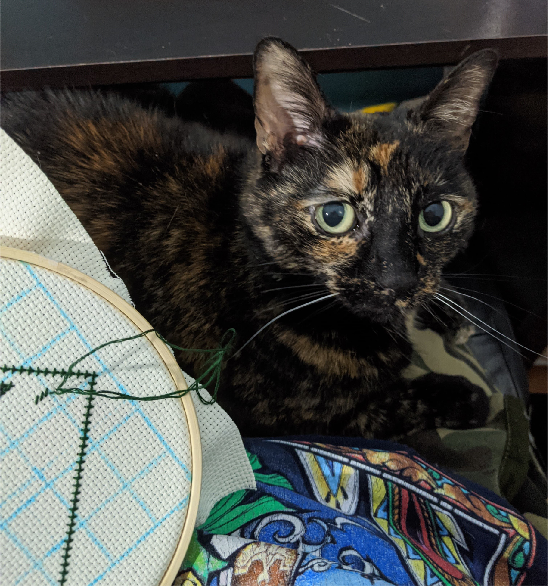

Light and Dark
Create a button and a card. Explore various ways to style them, include on hover and in light and dark mode.

Look at this cute cat. She knows how to cross stitch. She is so talented.
Learn more
Create a button and a card. Explore various ways to style them, include on hover and in light and dark mode.